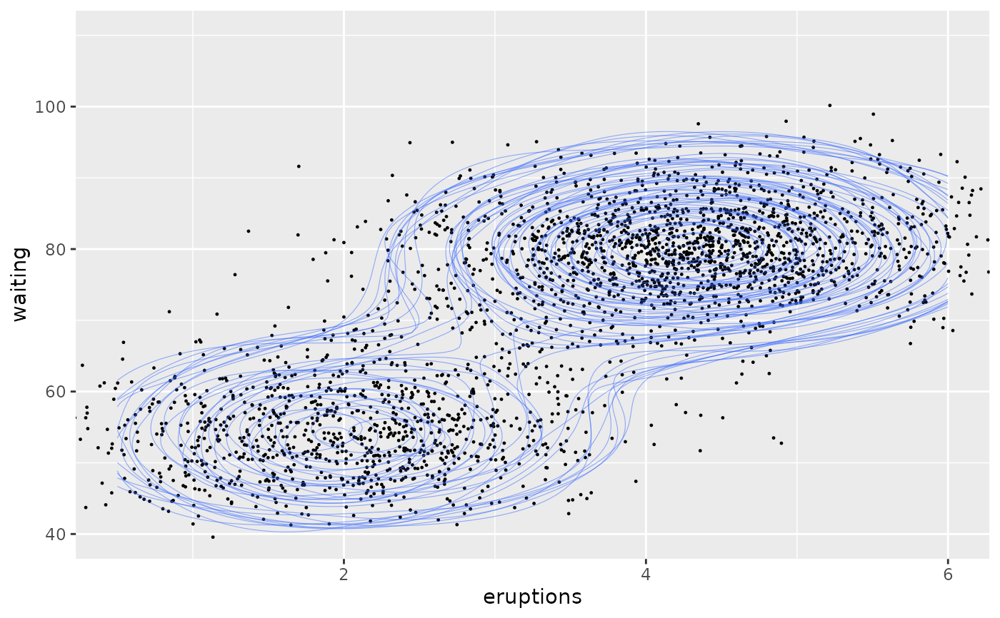
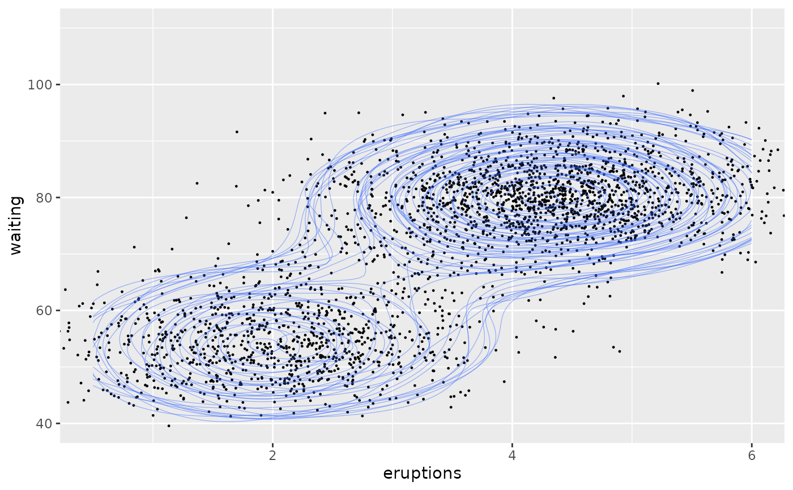
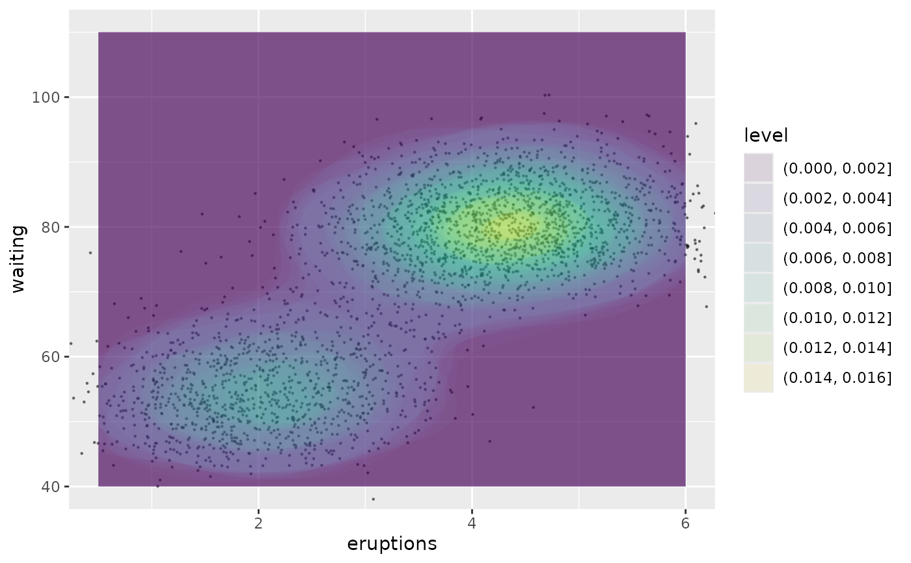
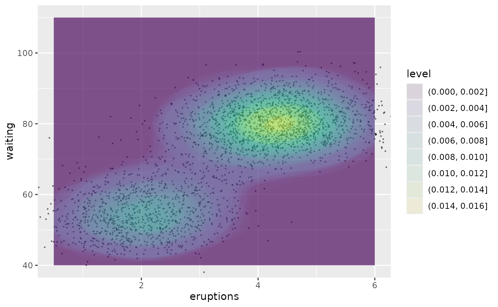

Uncertain contours of a 2D density estimate
Source:R/geom-density-2d-sample.R, R/stat-density-2d-sample.R
geom_density_2d_sample.RdIdentical to geom_density_2d() and geom_density_2d_filled, except that it will accept a distribution in place of any of the usual aesthetics.
Usage
geom_density_2d_sample(
mapping = NULL,
data = NULL,
stat = "density_2d_sample",
position = "identity",
...,
times = 10,
seed = NULL,
arrow = NULL,
arrow.fill = NULL,
lineend = "butt",
linejoin = "round",
linemitre = 10,
na.rm = FALSE,
show.legend = NA,
inherit.aes = TRUE
)
geom_density_2d_filled_sample(
mapping = NULL,
data = NULL,
stat = "density_2d_filled_sample",
position = "identity",
...,
times = 10,
seed = NULL,
rule = "evenodd",
lineend = "butt",
linejoin = "round",
linemitre = 10,
na.rm = FALSE,
show.legend = NA,
inherit.aes = TRUE
)
stat_density_2d_sample(
mapping = NULL,
data = NULL,
geom = "density_2d",
position = "identity",
...,
contour = TRUE,
contour_var = "density",
times = 10,
seed = NULL,
h = NULL,
adjust = c(1, 1),
n = 100,
na.rm = FALSE,
show.legend = NA,
inherit.aes = TRUE
)
stat_density_2d_filled_sample(
mapping = NULL,
data = NULL,
geom = "density_2d_filled",
position = "identity",
...,
contour = TRUE,
contour_var = "density",
times = 10,
seed = NULL,
h = NULL,
adjust = c(1, 1),
n = 100,
na.rm = FALSE,
show.legend = NA,
inherit.aes = TRUE
)Arguments
- mapping
Set of aesthetic mappings created by
aes(). If specified andinherit.aes = TRUE(the default), it is combined with the default mapping at the top level of the plot. You must supplymappingif there is no plot mapping.- data
The data to be displayed in this layer. There are three options:
If
NULL, the default, the data is inherited from the plot data as specified in the call toggplot().A
data.frame, or other object, will override the plot data. All objects will be fortified to produce a data frame. Seefortify()for which variables will be created.A
functionwill be called with a single argument, the plot data. The return value must be adata.frame, and will be used as the layer data. Afunctioncan be created from aformula(e.g.~ head(.x, 10)).- position
A position adjustment to use on the data for this layer. This can be used in various ways, including to prevent overplotting and improving the display. The
positionargument accepts the following:The result of calling a position function, such as
position_jitter(). This method allows for passing extra arguments to the position.A string naming the position adjustment. To give the position as a string, strip the function name of the
position_prefix. For example, to useposition_jitter(), give the position as"jitter".For more information and other ways to specify the position, see the layer position documentation.
- ...
Arguments passed on to
geom_contourbinwidthThe width of the contour bins. Overridden by
bins.binsNumber of contour bins. Overridden by
breaks.breaksOne of:
Numeric vector to set the contour breaks
A function that takes the range of the data and binwidth as input and returns breaks as output. A function can be created from a formula (e.g. ~ fullseq(.x, .y)).
Overrides
binwidthandbins. By default, this is a vector of length ten withpretty()breaks.
- times
A parameter used to control the number of values sampled from each distribution.
- seed
Set the seed for the layers random draw, allows you to plot the same draw across multiple layers.
- arrow
specification for arrow heads, as created by
grid::arrow().- arrow.fill
fill colour to use for the arrow head (if closed).
NULLmeans usecolouraesthetic.- lineend
Line end style (round, butt, square).
- linejoin
Line join style (round, mitre, bevel).
- linemitre
Line mitre limit (number greater than 1).
- na.rm
If
FALSE, the default, missing values are removed with a warning. IfTRUE, missing values are silently removed.- show.legend
logical. Should this layer be included in the legends?
NA, the default, includes if any aesthetics are mapped.FALSEnever includes, andTRUEalways includes. It can also be a named logical vector to finely select the aesthetics to display. To include legend keys for all levels, even when no data exists, useTRUE. IfNA, all levels are shown in legend, but unobserved levels are omitted.- inherit.aes
If
FALSE, overrides the default aesthetics, rather than combining with them. This is most useful for helper functions that define both data and aesthetics and shouldn't inherit behaviour from the default plot specification, e.g.annotation_borders().- rule
Either
"evenodd"or"winding". If polygons with holes are being drawn (using thesubgroupaesthetic) this argument defines how the hole coordinates are interpreted. See the examples ingrid::pathGrob()for an explanation.- geom, stat
Use to override the default connection between
geom_density_2d()andstat_density_2d(). For more information at overriding these connections, see how the stat and geom arguments work.- contour
If
TRUE, contour the results of the 2d density estimation.- contour_var
Character string identifying the variable to contour by. Can be one of
"density","ndensity", or"count". See the section on computed variables for details.- h
Bandwidth (vector of length two). If
NULL, estimated usingMASS::bandwidth.nrd().- adjust
A multiplicative bandwidth adjustment to be used if 'h' is 'NULL'. This makes it possible to adjust the bandwidth while still using the a bandwidth estimator. For example,
adjust = 1/2means use half of the default bandwidth.- n
Number of grid points in each direction.
Examples
library(ggplot2)
# ggplot
m <- ggplot(faithful, aes(x = eruptions, y = waiting)) +
geom_point() +
xlim(0.5, 6) +
ylim(40, 110)
# contour lines
m + geom_density_2d()
 # ggdibbler
n <- ggplot(uncertain_faithful, aes(x = eruptions, y = waiting)) +
geom_point_sample(size=2/10) +
scale_x_continuous_distribution(limits = c(0.5, 6)) +
scale_y_continuous_distribution(limits = c(40, 110))
n + geom_density_2d_sample(linewidth=2/10, alpha=0.5)

# contour bands
# ggplot
m + geom_density_2d_filled(alpha = 0.5)
# ggdibbler
n <- ggplot(uncertain_faithful, aes(x = eruptions, y = waiting)) +
geom_point_sample(size=2/10) +
scale_x_continuous_distribution(limits = c(0.5, 6)) +
scale_y_continuous_distribution(limits = c(40, 110))
n + geom_density_2d_sample(linewidth=2/10, alpha=0.5)

# contour bands
# ggplot
m + geom_density_2d_filled(alpha = 0.5)
 # ggdibbler
n + geom_density_2d_filled_sample(alpha = 0.1)

# ggdibbler
n + geom_density_2d_filled_sample(alpha = 0.1)
